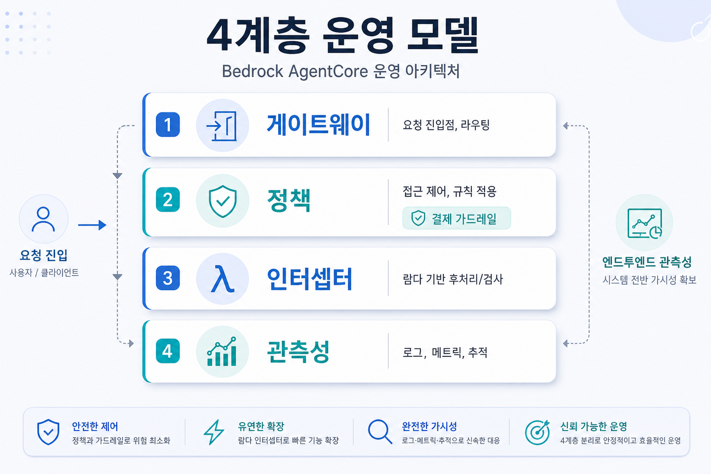
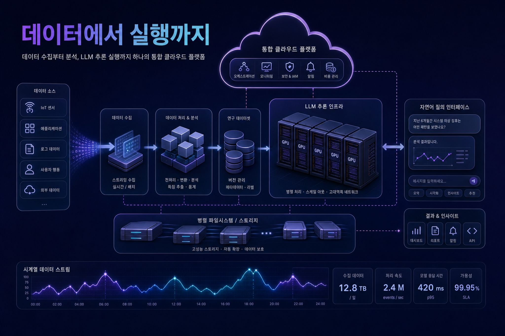

한 줄 결론: 한국 기업은 생성형 인공지능 과제를 더 이상 개별 챗봇이나 파일 검색으로만 설계하면 안 된다. 오늘 공개된 흐름은 모델, 코딩 에이전트, 도구 호출, 결제, 보안 정책, 관측성, 고성능 추론 저장소가 하나의 통제 가능한 플랫폼으로 묶이는 방향을 보여준다.
핵심 트렌드 분석
트렌드 1
모델 선택에서 운영 플랫폼 선택으로
오픈에이아이 지피티-5.5·지피티-5.4·코덱스의 베드록 일반 제공은 모델 조달 이슈를 넘어 리전, 감사, 네트워크 격리, 비용 약정, 개발자 워크플로까지 아마존웹서비스 운영 체계 안으로 넣는 사건이다.
트렌드 2
도구 호출은 중앙 게이트웨이에서 통제
에이전트코어 게이트웨이 확장은 여러 모델 컨텍스트 프로토콜 서버를 하나의 도구·프롬프트·리소스 카탈로그로 묶고, 권한·자격증명·관측성을 중앙화하는 방향을 보여준다.
트렌드 3
데이터 업무도 대화형 실행 환경으로
아마존 퀵은 연구 데이터와 시계열 데이터베이스를 자연어 분석 흐름으로 연결한다. 문서 검색을 넘어 근거 추적, 계획, 버전 수정, 외부 도구 실행이 결합된다.
트렌드 4
추론 인프라는 비용과 속도의 전장
러스터용 고성능 파일시스템와 그래픽처리장치 직접 저장 경로는 대형 모델 콜드스타트와 자동확장 지연을 줄인다. 모델 운영 비용은 그래픽처리장치, 저장소, 네트워크 설계에 의해 크게 좌우된다.
기술 변화의 의미
오늘의 공통분모는 에이전트가 실제 업무 시스템을 호출하기 시작할 때 필요한 통제면이다. 단순 응답 생성은 모델 품질 경쟁이지만, 업무 실행은 권한, 정책, 감사, 세션, 비용, 결제, 데이터 경계를 요구한다.
11건
이번 실행에서 신규 저장한 글 수. 그중 다수가 베드록 에이전트코어, 모델 컨텍스트 프로토콜, 정책, 결제, 관측성, 코덱스와 연결되어 있다.
기업 적용 관점: 오늘부터 바꿔야 할 설계 질문
| 영역 | 기존 질문 | 새 질문 | 권장 대응 |
|---|---|---|---|
| 모델·코딩 에이전트 | 어떤 모델이 성능이 좋은가 | 리전·감사·비용·개발자 흐름을 어떻게 통제하는가 | 베드록 기반 모델 카탈로그와 코딩 에이전트 운영 정책을 함께 검토 |
| 도구와 모델 컨텍스트 프로토콜 | 서버를 몇 개 연결할 수 있는가 | 도구 목록, 자격증명, 세션, 사용자 위임을 어디서 중앙 관리하는가 | 게이트웨이 중심 도구 등록·승인·폐기 절차 수립 |
| 데이터 에이전트 | 데이터를 검색할 수 있는가 | 행·열 권한, 근거, 질의 변환, 감사가 보장되는가 | 레이크 포메이션·정책·인터셉터를 결합한 데이터 접근 설계 |
| 결제와 유료 자원 | 에이전트가 결제할 수 있는가 | 예산 한도, 만료, 사용자 동의, 지갑 정보 보호가 강제되는가 | 결제 세션과 예산 정책을 모델 외부 인프라 계층에 배치 |
| 추론 인프라 | 그래픽처리장치가 충분한가 | 모델 로딩, 자동확장, 장애 복구, 저장소 경로가 비용 효율적인가 | 병렬 파일시스템, 직접 저장 경로, 양자화, 서빙 프레임워크를 통합 설계 |
한국 기업 관점 시사점

금융·제조
시계열 데이터, 품질 데이터, 설비 로그를 자연어로 분석하려면 모델 컨텍스트 프로토콜 서버를 직접 열기보다 인증·정책·감사를 담당하는 게이트웨이를 앞세워야 한다.
유통·커머스
리만코리아 사례처럼 상품 검색은 임베딩만으로 끝나지 않는다. 상품 단위 데이터 구조, 하이브리드 검색, 메타데이터 필터, 평가셋이 필요하다.
연구·바이오
퀵 리서치 흐름은 공개 문헌과 내부 문서를 함께 다루는 조직에 근거 추적과 버전 기반 분석 검토가 중요함을 보여준다.
정보기술 조직
코덱스와 고성능 모델 제공은 개발 생산성의 기회이지만, 저장소 접근권한, 변경 감사, 비용 한도, 보안 검토 자동화가 함께 설계되어야 한다.
실행 전략
사용 사례를 운영 위험 기준으로 분류한다.
읽기 전용, 내부 데이터 조회, 외부 도구 실행, 결제·구매 실행을 구분하고 승인 단계를 다르게 둔다.
읽기 전용, 내부 데이터 조회, 외부 도구 실행, 결제·구매 실행을 구분하고 승인 단계를 다르게 둔다.
공통 게이트웨이를 먼저 만든다.
팀별 모델 컨텍스트 프로토콜 서버 난립을 막고, 도구 등록·자격증명·정책·로그를 중앙 카탈로그로 관리한다.
팀별 모델 컨텍스트 프로토콜 서버 난립을 막고, 도구 등록·자격증명·정책·로그를 중앙 카탈로그로 관리한다.
평가셋과 관측성을 제품 요건으로 넣는다.
도구 선택 정확도, 대화 턴 품질, 세션 결과, 시스템 비용·오류를 단계별로 측정한다.
도구 선택 정확도, 대화 턴 품질, 세션 결과, 시스템 비용·오류를 단계별로 측정한다.
데이터 접근은 모델 밖에서 강제한다.
행·열 보안, 역할 매핑, 지리 조건, 민감정보 필터링은 정책과 인터셉터에서 처리한다.
행·열 보안, 역할 매핑, 지리 조건, 민감정보 필터링은 정책과 인터셉터에서 처리한다.
추론 인프라의 콜드스타트를 비용 항목으로 본다.
대형 모델 서비스는 그래픽처리장치 수뿐 아니라 체크포인트 로딩 경로와 파일시스템 처리량까지 설계한다.
대형 모델 서비스는 그래픽처리장치 수뿐 아니라 체크포인트 로딩 경로와 파일시스템 처리량까지 설계한다.

리스크와 거버넌스 고려사항
권한 과잉
도구 호출 권한을 역할과 업무 맥락 기준으로 분리하고, 관리자성 도구는 별도 승인과 기록을 남긴다.
비용 폭주
모델 추론, 도구 호출, 결제 세션, 저장소 처리량을 각각 예산과 경보로 관리한다.
근거 불명확
연구·분석 산출물은 문장별 근거와 버전 이력을 보존하고, 자동 요약은 검토 흐름을 포함해야 한다.
운영 소유권 부재
플랫폼팀, 보안팀, 데이터 소유자, 제품책임자, 현업 검토자의 역할을 명확히 해야 한다.
수집 원문 목록
이미지 프롬프트 부록
이미지 프롬프트 1: 대표 히어로 이미지. 삽입 위치는 본문 상단. 권장 비율은 3:2. 대체 텍스트는 “아마존웹서비스 기반 에이전트 운영 체계를 표현한 추상 일러스트”.
이미지 프롬프트 2: 에이전트 거버넌스 인포그래픽. 삽입 위치는 거버넌스와 리스크 섹션. 권장 비율은 3:2. 대체 텍스트는 “에이전트 거버넌스 4계층 운영 모델 인포그래픽”.
이미지 프롬프트 3: 데이터와 추론 인프라 시각화. 삽입 위치는 데이터·클라우드 실행 전략 섹션. 권장 비율은 3:2. 대체 텍스트는 “데이터 분석과 대형 언어모델 추론 인프라가 연결된 클라우드 구조”.